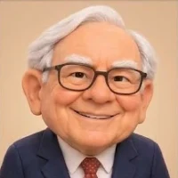
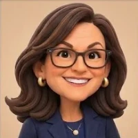

거장들의 선택Titans' picks
거장들은 무엇을 샀나What the great investors bought
미국에서 1억 달러 넘게 굴리는 운용사는 분기마다 SEC 에 13F 공시를 내고 보유 주식을 밝힙니다. 그 공시를 모아 무엇을 늘리고 줄였는지, 추정 매수가 대비 어디에 와 있는지를 투자자마다 한 화면에 담았습니다. 분기 마지막 날의 기록이고, 미국 상장 주식만 나오며, 무엇을 사라고 말하지 않습니다. Every US manager overseeing more than $100 million files a 13F with the SEC each quarter, listing the shares it holds. These pages gather those filings, one investor each, to show what was added and trimmed and where each position stands against its estimated purchase price. They record the last day of each quarter, cover US-listed shares only, and are not advice on what to buy.

버크셔 해서웨이Berkshire Hathaway
워런 버핏Warren Buffett
워런 버핏이 1965년 경영을 맡은 회사입니다. 이해할 수 있고 경쟁자가 흉내 내기 어려운 사업을 골라 여러 해를 들고 갑니다. 1998년부터의 공시가 있습니다. The company Warren Buffett took over in 1965. It picks businesses it can understand and rivals find hard to copy, and holds them for years. Filings go back to 1998.
보러 가기 →Open →
히말라야 캐피털Himalaya Capital
리루Li Lu
리루가 1997년 세운 운용사입니다. 몇 안 되는 회사에 크게 싣고 오래 갖습니다. 미국 밖 거래소에서 산 주식은 13F 에 실리지 않아 여기에 나오지 않습니다. 2016년부터의 공시가 있습니다. The firm Li Lu founded in 1997. It puts large sums into a handful of companies and keeps them for a long time. Shares bought on exchanges outside the US never reach a 13F, so they are not shown. Filings go back to 2016.
보러 가기 →Open →
애팔루사Appaloosa
데이비드 테퍼David Tepper
데이비드 테퍼가 1993년 세운 운용사입니다. 남들이 피하는 자산을 사는 쪽으로 알려졌습니다. 채권과 대부분의 옵션은 13F 에 나오지 않아 주식 부분만 봅니다. 2016년에 법인이 바뀐 두 공시 이력을 이어 2013년부터 봅니다. The firm David Tepper founded in 1993, known for buying what others are fleeing. Bonds and most options do not appear in a 13F, so this shows the stock side only. Two filing histories, split by a change of legal entity in 2016, are joined from 2013 on.
보러 가기 →Open →
오크트리 캐피털Oaktree Capital
하워드 막스Howard Marks
하워드 막스가 동료들과 1995년 세운 운용사입니다. 본업은 고위험 채권과 어려움에 빠진 회사의 빚이고, 구조조정 끝에 받은 주식이 13F 에 나오기도 합니다. 옵션과 전환사채는 빼고 주식만 봅니다. 2013년부터의 공시가 있습니다. The firm Howard Marks co-founded in 1995. Its core business is high-yield bonds and the debt of companies in distress, and shares received in restructurings can show up in its 13F. Options and convertible bonds are left out; this shows the shares only. Filings go back to 2013.
보러 가기 →Open →
바우포스트 그룹Baupost Group
세스 클라만Seth Klarman
세스 클라만이 1982년 세울 때부터 이끄는 운용사입니다. 싸게 살 것이 없으면 현금을 들고 기다리는 것으로 알려졌습니다. 부실채권·부동산·비상장 투자는 13F 에 나오지 않아 미국 상장 주식만 봅니다. 2013년부터의 공시가 있습니다. The firm Seth Klarman has run since its founding in 1982, known for holding cash when nothing is cheap enough. Distressed debt, real estate and private deals do not appear in a 13F; this shows US-listed shares only. Filings go back to 2013.
보러 가기 →Open →
퍼싱 스퀘어Pershing Square
빌 애크먼Bill Ackman
빌 애크먼이 이끄는 행동주의 펀드입니다. 열 곳 안팎의 회사에 큰 지분을 사고 경영진에게 변화를 요구합니다. 미국 상장 주식만 보며, 2013년부터의 공시가 있습니다. The activist fund Bill Ackman runs: large stakes in around ten companies, and pressure on management to change. US-listed shares only; filings go back to 2013.
보러 가기 →Open →듀케인 패밀리 오피스Duquesne Family Office
스탠리 드러켄밀러Stanley Druckenmiller
스탠리 드러켄밀러가 자기 돈을 굴리는 패밀리 오피스입니다. 금리·통화에 거는 거시 투자자라 채권·선물은 13F 에 나오지 않아 주식 부분만 봅니다. 종목이 분기마다 많이 바뀝니다. 2013년부터의 공시가 있습니다. The family office through which Stanley Druckenmiller invests his own money. A macro investor who bets on rates and currencies; bonds and futures do not appear in a 13F, so this shows the shares only. The names change a lot from quarter to quarter. Filings go back to 2013.
보러 가기 →Open →
ARK 인베스트ARK Invest
캐시 우드Cathie Wood
캐시 우드가 세운 운용사입니다. 새 기술로 크게 바뀔 것이라고 보는 회사를 여러 종목에 나눠 담고, 주식 수가 분기마다 거의 다 바뀝니다. 매일 공개하는 자료 대신 다른 투자자와 같은 13F 만 봅니다. 2016년부터의 공시가 있습니다. The firm Cathie Wood founded. It spreads its money across many companies it expects new technology to transform, and the share counts move for nearly every holding each quarter. This uses the 13F, like the other investors here, rather than ARK's daily disclosures. Filings go back to 2016.
보러 가기 →Open →본 사이트에서 제공하는 시장 지표, 13F 공시 자료와 과거 수익률은 미래의 투자 수익을 보장하지 않습니다. 모든 정보는 참고용이며 투자 권유가 아닙니다. 이를 바탕으로 한 투자 결정의 책임은 전적으로 사용자에게 있습니다.Past performance is not indicative of future results. All market indicators, 13F filing data and historical returns are provided for informational purposes only and are not investment advice. Any investment decision made on the basis of this information is solely the user's responsibility.
13F 자료 안내 →About the 13F data →← itpaidoff.com